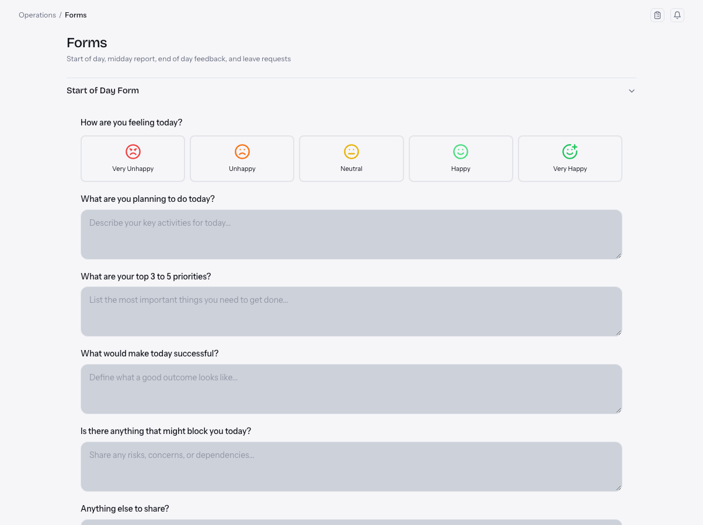
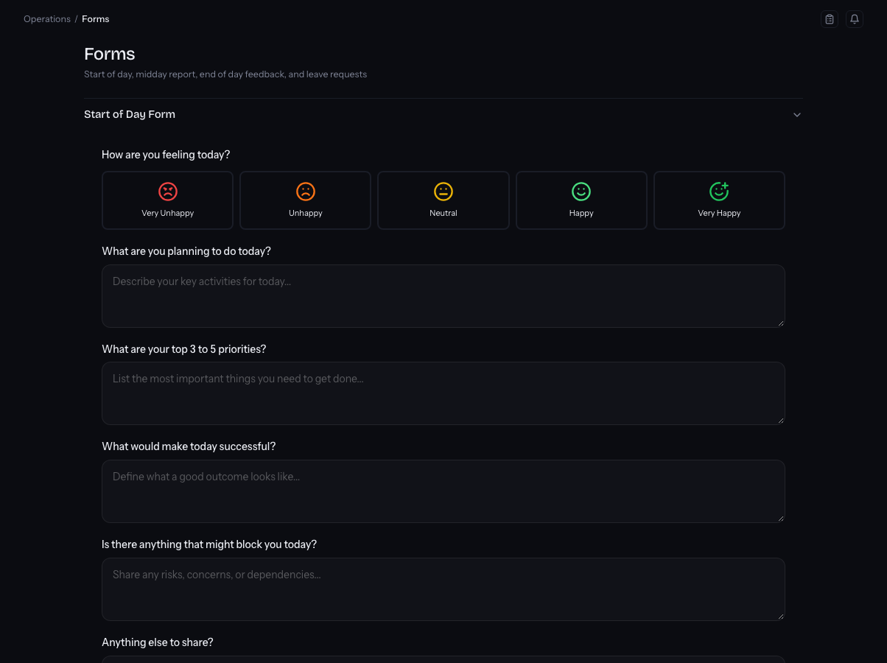

Vexon OS
One platform for every role in a sales-outsourcing company, from the CEO to a trialist on their first day.
- Problem
- Operations ran on Google Sheets, manual CRM exports and a stack of subscriptions. Managers found out who was behind at month end.
- Built
- Portals for 15 roles with row-level security on every table, live KPIs from the CRM, red/amber/green targets, hiring and onboarding pipelines, finance tools, scheduled jobs, and an admin console to configure it all without code. In October I audited real usage, cut 39 pages and redesigned the UI in two days.
- Result
- 426 PRs in 15 weeks; 87 backend functions, 533 migrations, ~199 tables. A 28-client health spreadsheet retired; three critical security holes closed.
- React
- TypeScript
- Supabase
- PostgreSQL + RLS
- Deno edge functions
- pg_cron